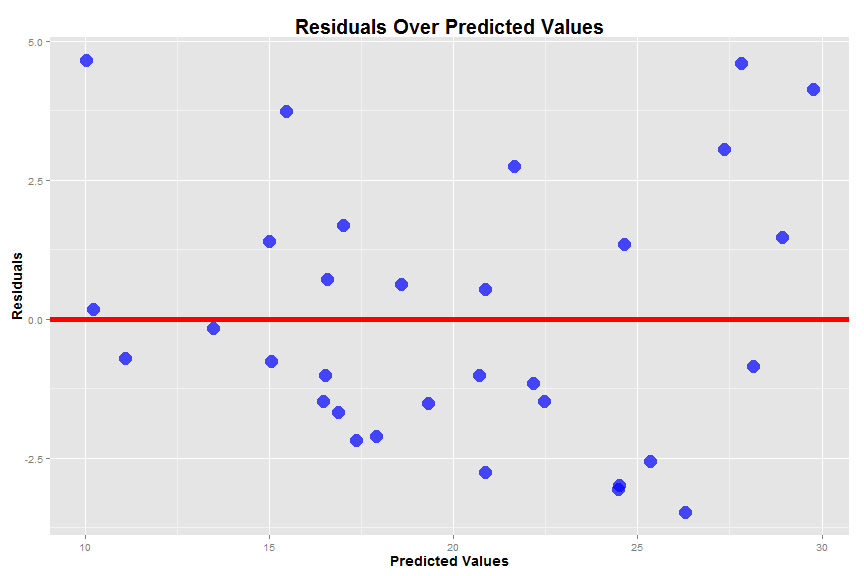
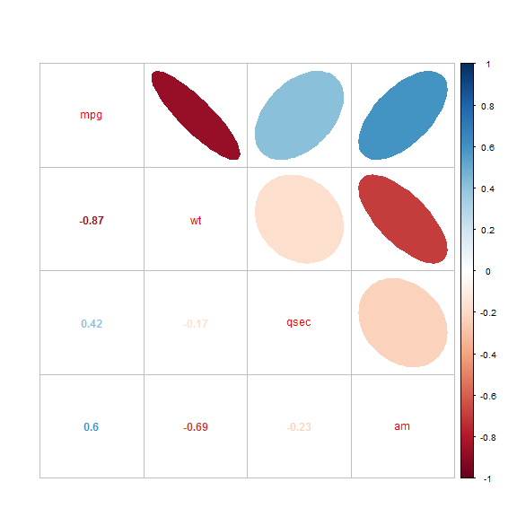
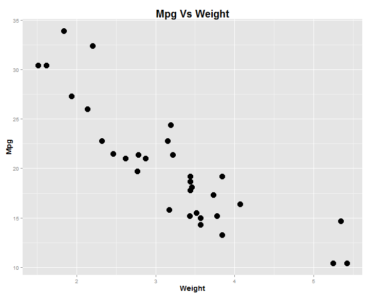
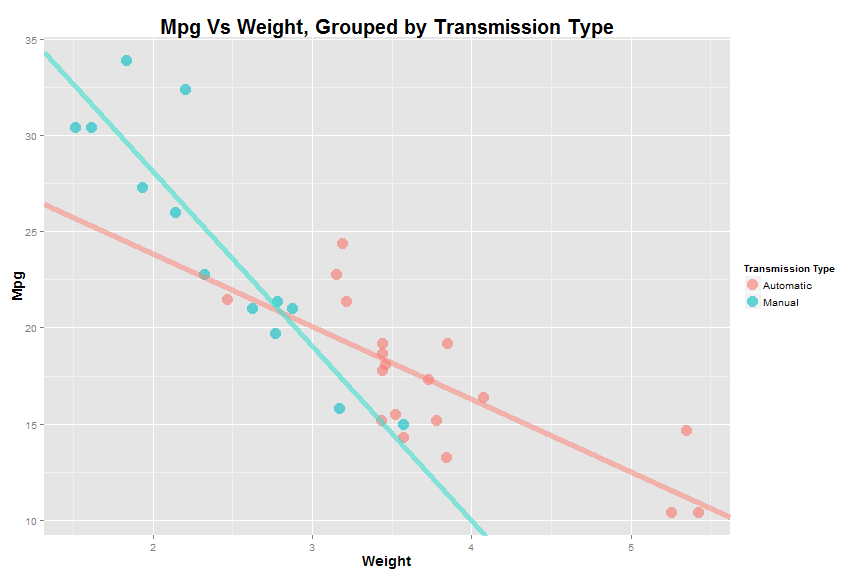

Build a linear regression model
Investigate ways to improve our model
- Look at interaction variables
Evaluate our models
- Explore Diagnostics
Interpret our models
Tweaking Linear Regression Models
An Introduction
Alexander Hegeman
Overview
Intended Audience
Undergraduate students
Beginners in data analysis
Interested hobbyists
Our Data
Data is from the 1974 Motor Trend US magazine
data(mtcars)
head(mtcars)
## mpg cyl disp hp drat wt qsec vs am gear carb
## Mazda RX4 21.0 6 160 110 3.90 2.620 16.46 0 1 4 4
## Mazda RX4 Wag 21.0 6 160 110 3.90 2.875 17.02 0 1 4 4
## Datsun 710 22.8 4 108 93 3.85 2.320 18.61 1 1 4 1
## Hornet 4 Drive 21.4 6 258 110 3.08 3.215 19.44 1 0 3 1
## Hornet Sportabout 18.7 8 360 175 3.15 3.440 17.02 0 0 3 2
## Valiant 18.1 6 225 105 2.76 3.460 20.22 1 0 3 1
Motivating Thoughts
What is the question we would like to answer?
How are we going to answer this question?
What do the data look like?
How are we going to evaluate our solution?
Are there interesting relationships in our data?
We will use \(R^2\) to evaluate our models.
\(R^2\) is the percentage of variance of the response variable explained by the model
Higher \(R^2\) is better*
Other options:
- RMSE
- Accuracy
- AUC
Occam's Razor
Correlation Between All Varibles

First Model
fit_all <- lm(mpg ~ ., data = mtcars)
summary(fit_all)$coefficients
## Estimate Std. Error t value Pr(>|t|)
## (Intercept) 12.30337416 18.71788443 0.6573058 0.51812440
## cyl -0.11144048 1.04502336 -0.1066392 0.91608738
## disp 0.01333524 0.01785750 0.7467585 0.46348865
## hp -0.02148212 0.02176858 -0.9868407 0.33495531
## drat 0.78711097 1.63537307 0.4813036 0.63527790
## wt -3.71530393 1.89441430 -1.9611887 0.06325215
## qsec 0.82104075 0.73084480 1.1234133 0.27394127
## vs 0.31776281 2.10450861 0.1509915 0.88142347
## am 2.52022689 2.05665055 1.2254035 0.23398971
## gear 0.65541302 1.49325996 0.4389142 0.66520643
## carb -0.19941925 0.82875250 -0.2406258 0.81217871
p-values
Let \(\beta_i\) be the true coefficient of our \(i^{th}\) independent variable.
Then our p-values represnt the probability of obtaining our coefficient estimate, \(\hat \beta_i\), given the null hypothesis \(H_0: \beta_i = 0\)
Common significance cutoff value is \(p = 0.05\)
Feature Selection
Identify variable with highest p-value
Fit new regression model excluding this variable
Repeat process until all independent variables are significant
fit_minus_one <- lm(mpg ~ .-cyl, data = mtcars)
summary(fit_minus_one)$coefficients
## Estimate Std. Error t value Pr(>|t|)
## (Intercept) 10.96007405 13.53030251 0.8100391 0.42659327
## disp 0.01282839 0.01682215 0.7625891 0.45380797
## hp -0.02190885 0.02091131 -1.0477031 0.30615002
## drat 0.83519652 1.53625251 0.5436584 0.59214373
## wt -3.69250814 1.83953550 -2.0073046 0.05715727
## qsec 0.84244138 0.68678068 1.2266527 0.23291993
## vs 0.38974986 1.94800204 0.2000767 0.84325850
## am 2.57742789 1.94034563 1.3283344 0.19768373
## gear 0.71155439 1.36561933 0.5210489 0.60753821
## carb -0.21958316 0.78855537 -0.2784626 0.78325783
fit_minus_two <- lm(mpg ~ .-cyl -vs, data = mtcars)
summary(fit_minus_two)$coefficients
## Estimate Std. Error t value Pr(>|t|)
## (Intercept) 9.76827789 11.89230469 0.8213949 0.41985460
## disp 0.01214441 0.01612373 0.7532010 0.45897019
## hp -0.02095020 0.01992567 -1.0514175 0.30398892
## drat 0.87509822 1.49112525 0.5868710 0.56300717
## wt -3.71151106 1.79833544 -2.0638592 0.05049085
## qsec 0.91082822 0.58311935 1.5619928 0.13194532
## am 2.52390094 1.88128007 1.3415870 0.19282690
## gear 0.75984464 1.31577205 0.5774896 0.56921947
## carb -0.24796312 0.75933250 -0.3265541 0.74695821
fit_minus_three <- lm(mpg ~ . -cyl -vs -carb, data = mtcars)
summary(fit_minus_three)
##
## Call:
## lm(formula = mpg ~ . - cyl - vs - carb, data = mtcars)
##
## Residuals:
## Min 1Q Median 3Q Max
## -3.1200 -1.7753 -0.1446 1.0903 4.7172
##
## Coefficients:
## Estimate Std. Error t value Pr(>|t|)
## (Intercept) 9.19763 11.54220 0.797 0.43334
## disp 0.01552 0.01214 1.278 0.21342
## hp -0.02471 0.01596 -1.548 0.13476
## drat 0.81023 1.45007 0.559 0.58151
## wt -4.13065 1.23593 -3.342 0.00272 **
## qsec 1.00979 0.48883 2.066 0.04981 *
## am 2.58980 1.83528 1.411 0.17104
## gear 0.60644 1.20596 0.503 0.61964
## ---
## Signif. codes: 0 '***' 0.001 '**' 0.01 '*' 0.05 '.' 0.1 ' ' 1
##
## Residual standard error: 2.488 on 24 degrees of freedom
## Multiple R-squared: 0.8681, Adjusted R-squared: 0.8296
## F-statistic: 22.56 on 7 and 24 DF, p-value: 4.218e-09
fit_sig <- lm(mpg ~ wt + qsec + am, data = mtcars)
summary(fit_sig)
##
## Call:
## lm(formula = mpg ~ wt + qsec + am, data = mtcars)
##
## Residuals:
## Min 1Q Median 3Q Max
## -3.4811 -1.5555 -0.7257 1.4110 4.6610
##
## Coefficients:
## Estimate Std. Error t value Pr(>|t|)
## (Intercept) 9.6178 6.9596 1.382 0.177915
## wt -3.9165 0.7112 -5.507 6.95e-06 ***
## qsec 1.2259 0.2887 4.247 0.000216 ***
## am 2.9358 1.4109 2.081 0.046716 *
## ---
## Signif. codes: 0 '***' 0.001 '**' 0.01 '*' 0.05 '.' 0.1 ' ' 1
##
## Residual standard error: 2.459 on 28 degrees of freedom
## Multiple R-squared: 0.8497, Adjusted R-squared: 0.8336
## F-statistic: 52.75 on 3 and 28 DF, p-value: 1.21e-11
Evaluation of base model
summary(fit_all)$adj.r.squared
## [1] 0.8066423
summary(fit_sig)$adj.r.squared
## [1] 0.8335561

Residuals
\[\hat Y_i = \hat \beta_0 + \hat \beta_1X_1 + \hat \beta_2X_2 + \epsilon_i\]
We want our residuals to follow a normal distribution
Some sort of pattern in the residual plot usually points to variance in our depedent variable we have not accounted for
- missing terms in model
We are looking for homoscedascisity, or constant variance
Histogram of Residuals

Correlation of Significant Variables

Fitting Model with Interactions
fit_int <- lm(mpg ~ wt*qsec + wt*am + qsec*am, data = mtcars)
summary(fit_int)$coefficients
## Estimate Std. Error t value Pr(>|t|)
## (Intercept) -31.8598140 33.5894244 -0.9485073 0.351950704
## wt 9.8361860 9.8094164 1.0027290 0.325598997
## qsec 3.3187634 1.8349518 1.8086379 0.082551306
## am 21.7150538 15.8498376 1.3700490 0.182851089
## wt:qsec -0.7113650 0.5424688 -1.3113474 0.201657327
## wt:am -4.7165458 1.6643036 -2.8339456 0.008964866
## qsec:am -0.3536353 0.7094109 -0.4984915 0.622495265
fit_int <- lm(mpg ~ wt + qsec + am + wt:am, data = mtcars)
summary(fit_int)$coefficients
## Estimate Std. Error t value Pr(>|t|)
## (Intercept) 9.723053 5.8990407 1.648243 0.1108925394
## wt -2.936531 0.6660253 -4.409038 0.0001488947
## qsec 1.016974 0.2520152 4.035366 0.0004030165
## am 14.079428 3.4352512 4.098515 0.0003408693
## wt:am -4.141376 1.1968119 -3.460340 0.0018085763
summary(fit_int)$adj.r.squared
## [1] 0.8804219




Histogram of Residuals of New Model


Is It Worth It???
Things to consider:
Who is the end user of your analysis?
What is the intended application of your analysis?
"In modeling, our interest lies in parsimonious, interpretable representations of the data that enhance our understanding of the phenomena under study"
-Brian Caffo/Jeff Leek/Roger Peng
Wrap Up
Regression analysis is difficult!
- Keep interactions in mind
- Visualize your data
- Be mindful of application/end user
- Diagnostics are important
Regression analysis is fun!
- Always something new to uncover
- Many, many techniques to discover and attemp